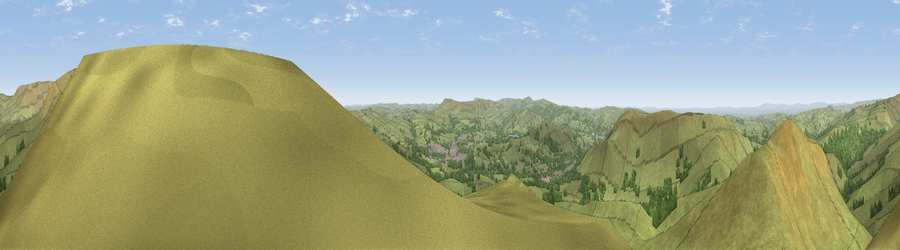

Viewpoint near Wash
#6548 in England · top 6% of its area beats it · near WashThe view, rendered

A 360° render of this exact spot computed from the terrain model, tree cover and land cover — summer colours, afternoon light, calibrated against photographs of famous viewpoints. Real trees, hedges and buildings will differ in detail.
The panorama
Grey silhouette: terrain skyline in each direction (720 bearings, Earth curvature and refraction included). Dashed green: skyline with trees (+15 m) and buildings (+8 m) as obstacles. Blue strip: how far the ground is visible on each bearing.
Where the view opens
Wedge length = distance to the farthest visible ground on that bearing (vegetation-aware). Rings at 10, 25 and 50 km.
What fills the view
91% grassland · 8% woodland · 1% built-up
Angular shares of the visible panorama (visual magnitude), not map area. Landscape diversity 0.15 (0–1 Shannon).
Key numbers
More beautiful places nearby
The staircase of upgrades: each row has a higher view potential than everything closer. Driving times are estimates from straight-line distance, calibrated against real road routing — check an actual route before setting out.
| Place | Direction | Drive | Score |
|---|---|---|---|
| Chinley Churn (North) | W · 2 km | ~6 min | 68.5 |
| Viewpoint near Upper Booth | NNE · 3 km | ~6 min | 72.6 |
| Lord's Seat | ESE · 5 km | ~11 min | 73.1 |
| Harrop Edge | NNW · 14 km | ~26 min | 74.6 |
| Wild Bank | NNW · 15 km | ~27 min | 76.2 |
| Viewpoint near Carrbrook | NNW · 17 km | ~30 min | 77.1 |
| Viewpoint near Mow Cop | SW · 33 km | ~51 min | 78.9 |
| Viewpoint near Mow Cop | SW · 34 km | ~52 min | 80.2 |
53.35723, -1.91056 · source: screening · position refined by local search. Computed location — check access rights before visiting.